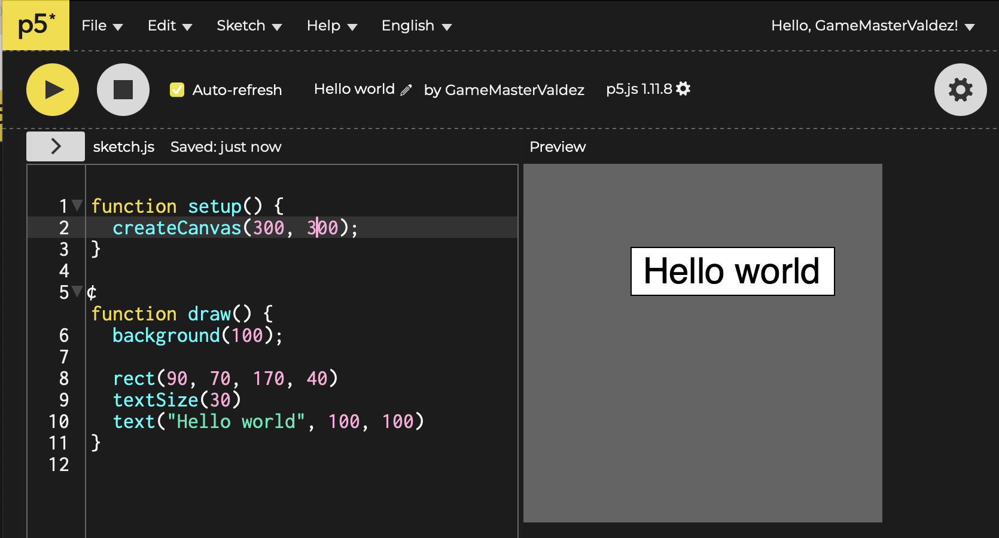
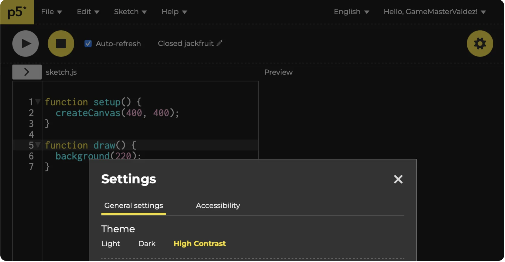
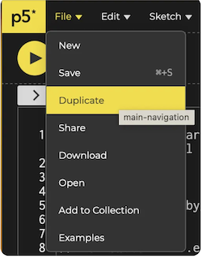
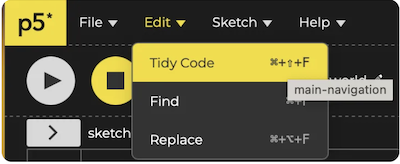
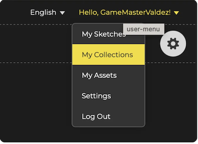
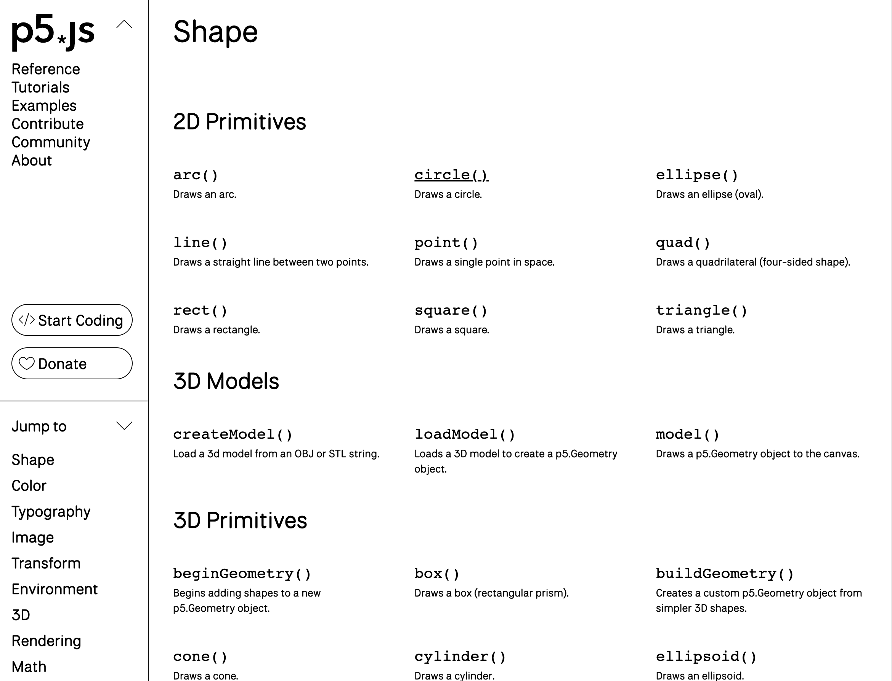
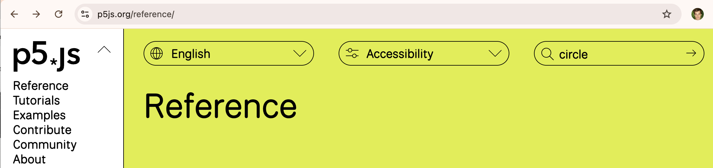
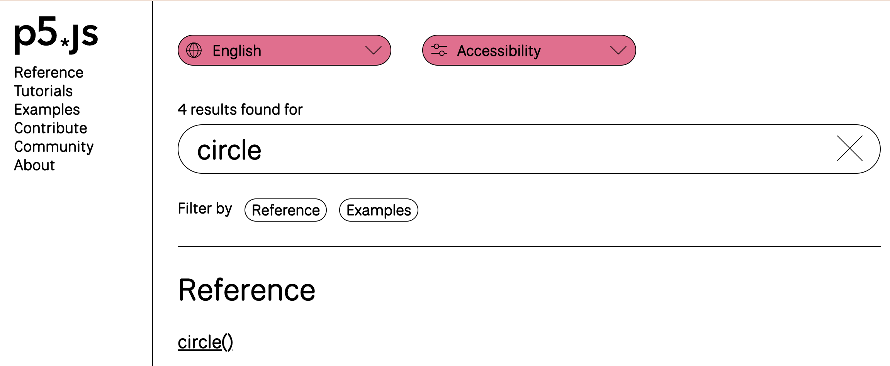

Kom i gang med programmering
Indhold
Programmeringssprog og framework (editor):
Vi programmerer i programmeringssproget javascript, som er et af de mest populære programmeringssprog 2025. Herudover benytter vi javascript biblioteket p5js (https://p5js.org) som har nogle indbyggede funktioner der gør det nemt at lave grafisk flotte, sjove og kreative programmer. For at gøre det nemmere at skrive og afvikle vores programmer bruger vi online editoren her: https://editor.p5js.org
Hvad er et program
Et computerprogram er en opskrift, som fortæller computeren præcis, hvad den skal gøre. Ligesom en opskrift til at bage en kage fortæller dig, at du skal blande mel, sukker og æg og bage det i ovnen, så fortæller et program computeren, hvad den skal gøre - for eksempel vise noget på skærmen eller spille en lyd, når man trykker på et knap.
💡 Sådan lærer du bedst at programmere
Hej! Hvis du gerne vil lære at programmere, er her nogle tips, der kan gøre det meget sjovere og lettere:
🎯 1. Start med noget, du synes er sjovt
Det er meget sjovere at lære, hvis du laver noget, du selv synes er fedt - som et spil, en animation eller noget, du selv finder på. Du bestemmer!
🧱 2. Tag det stille og roligt
Du behøver ikke kunne det hele med det samme. Start med det nemme, som fx:
- få noget til at vises på skærmen
- lave en knap
- få noget til at bevæge sig
- hvis du gerne vil lære det grundlæggende, så lav disse opgaver: Start opgaver
Det er som at bygge med LEGO – du tager én klods ad gangen.
🔍 3. Prøv at forstå, hvad koden gør
Det er bedre at forstå koden end bare at kopiere den. Spørg dig selv:
“Hvad sker der, hvis jeg ændrer det her tal?”
Så lærer du, hvordan koden virker.
🎨 4. Leg med det!
Programmering er ikke kun regler – det er også leg og kreativitet. Du må gerne eksperimentere, lave fejl og prøve igen. Det er sådan man lærer!
♻️ 5. Øv dig flere gange – men på nye måder
Når du har lavet én ting, så prøv at lave en lignende ting på en ny måde. Fx: "Nu har du lavet en bold, der hopper – kan du lave en firkant, der flyver?"
👫 6. Vis det til andre og samarbejd
Det er sjovt at vise det, du har lavet – og du kan lære meget af at arbejde sammen med
andre.
Tip: Prøv at kode med en ven og find på noget sejt sammen!
🛠️ 7. Editoren
Du bruger p5 editoren, hvor du hurtigt kan se, hvad koden gør.
Det føles næsten som at
trylle ✨
Hvad skal jeg gøre for at komme i gang
Note: Her er et link til den officieller p5js getting started guide: https://p5js.org/tutorials/get-started/
Step 1: Åben: https://editor.p5js.org/ og tryk på “sign up” øverst i højre hjørne.
Step 2: Skriv følgende kode ind for at lave dit første program. Tryk på play knappen for at afvikle programmet.
Step 3: Hvis du gerne vil have farverne som vist ovenfor skal vælge skal du trykke på tandhjulet til øverst til højre og vælge General settings → High Contrast
Trin 4: Når du er kommet godt i gang med at programmere, kan du tænde for Autocomplete
Hinter (se billedet ovenfor).
Det betyder, at editoren begynder at hjælpe dig ved at foreslå funktioner, mens du
skriver.
For eksempel, hvis du skriver "cir", vil den foreslå circle() - en
funktion, der kan tegne en cirkel.
Du vælger forslaget ved at trykke på Enter-tasten.
Når du ser circle(x, y, d), er x og y tal, der
bestemmer hvor på skærmen cirklen skal være,
og d er hvor stor cirklen skal være (d står for diameter).
Disse tre ting kaldes parametre - det er information, som funktionen skal bruge for at
virke.
Hvis du klikker på den lille gule pil ved siden af circle(), kan du åbne
dokumentationen.
Det er en slags opslagsbog, hvor du kan læse mere om, hvordan circle() og
andre funktioner fungerer.

Step 5: Det er vigtigt at du kender og kan benytte funktionaliteten i editoren. Prøv derfor nedenstående funktionalitet af:
-
Man kan omdøbe et program ved at trykke på program navnet. I eksemplet ovenfor har jeg omdøbt program navnet til “Hello world”.
-
Hvis man sætter flueben i Auto-refresh så behøver man ikke at trykke play hver gang man vil afvikle programmet
-
I “File” menuen kan man vælge “Duplicate” for at tage en kopi af sit program. Hvis man vælger “Share” kan man få et link så man kan sende sin kode til andre (ved at kopiere browserens url f.eks. https://editor.p5js.org/JensValdez/sketches/WChmCr6qr). Hvis man vælger “Share” kan man også få et link så andre kan prøve ens program i full screen mode f.eks. hvis man har lavet et flot Hello world program (f.eks. https://editor.p5js.org/JensValdez/full/WChmCr6qr).
 -
“Edit” menuen har en rigtig brugbar funktion der hedder “Tidy Code” som sørge of at koden står pænt. Dette er en stor hjælp til at sikre at man har skrevet koden korrekt
 -
Når man laver et program, så hedder det en Sketch. I menuen øverst til højre kan man finde de programmer man tidlige har lavet og organisere dem i Collections. Man får hurtig lavet virkelig mange programmer og muligvis forskellige backup versioner af disse. Det hjælper derfor rigtig meget at navngive fornuftigt og organisere ine Sketches i Collections.

Step 6: Man kan finde en oversigt over dokumentationen for alle de indbyggede p5js funktioner her: https://p5js.org/reference/
Hvorefter man kommer ind på denne side. Hvis man f.eks. gerne finde ud af hvordan man tegner en cirkel, så kan man i venstre side vælge Shapes -> 2D Primitives -> Circle
Alternativt kan man søge efter circle øverst til højre.
 Her er documentationen for en cirkel:

På denne side er en forklaring af den funktion man har søgt på (i vores tilfælde en cirkel), et eksempel (hvor man kan vælge edit og prøve funktionen af), syntaksen for hvordan man bruger funktionen (som der ses ovenfor tager circle funktionen tre argumenter) samt en forklaring af hvad argumenterne er (i vores tilfælde er det x koordinat, y koordinat samt diameteren)
Get started with programming
Content
Programming language and framework (editor):
We will program in JavaScript, one of the most popular programming languages in 2025. We also use the p5.js JavaScript library (https://p5js.org), which has built-in functions that make it easy to create graphically beautiful, fun, and creative programs. To make it easier to write and run our programs, we use the online editor here: https://editor.p5js.org
What is a program
A computer program is a recipe that tells the computer exactly what to do. Just like a recipe for baking a cake tells you to mix flour, sugar, and eggs and bake it in the oven, a program tells the computer what to do - for example, show something on the screen or play a sound when you press a button.
💡 How to Learn Programming in the Best Way
Hey! If you want to learn how to code, here are some tips to make it fun and easy:
🎯 1. Start with something fun
It's way more exciting to learn if you're making something you actually like – like a
game, an animation, or your own idea.
You’re the boss of your project!
🧱 2. Take it step by step
You don’t need to know everything at once. Start with simple things like:
- showing something on the screen
- making a button
- moving an object
- if you want to learn the basics, then do these exercises: Start exercises
It’s like building with LEGO – one brick at a time.
🔍 3. Try to understand what the code does
It’s better to understand the code than just copy it.
Ask yourself:
“What happens if I change this number?”
That’s how you learn how it really works.
🎨 4. Play around with it!
Coding isn’t just rules – it’s also creativity and fun.
It’s totally okay to make
mistakes and try things out. That’s how you get better!
♻️ 5. Practice – but with new twists
Once you make something once, try to make a new version with small changes.
For
example: “You made a bouncing ball – now can you make a square that flies?”
👫 6. Share and work together
It’s fun to show off what you made, and you can learn a lot from coding with
others.
Tip: Try coding with a friend and make something cool together!
🛠️ 7. The editor
You use the p5.js editor, where you can instantly see what your code does.
It’s almost
like magic ✨
How do I get started
Note: Here is a link to the official p5.js getting started guide: https://p5js.org/tutorials/get-started/
Step 1: Open: https://editor.p5js.org/ and click "sign up" in the top right corner.
Step 2: Enter the following code to create your first program. Press the play button to run the program.
Step 3: If you want the colors as shown above, click the gear icon in the top right and select General settings → High Contrast.
Step 4: When you've gotten comfortable with programming, you can enable Autocomplete
Hinter (see the image above).
This means the editor will start helping you by suggesting functions as you type.
For example, if you type "cir", it will suggest circle() - a
function that can draw a circle.
You select the suggestion by pressing the Enter key.
When you see circle(x, y, d), x and y are numbers that
determine where on the screen the circle should be,
and d is how large the circle should be (d stands for diameter).
These three things are called parameters - they are information that the function needs to
work.
If you click on the small yellow arrow next to circle(), you can open
the documentation.
It's like a reference book where you can read more about how circle() and
other functions work.
Step 5: It is important that you know and can use the functionality in the editor. Therefore, try out the functionality below:
-
You can rename a program. In the example above, I have renamed the program to "Hello world".
-
If you check Auto-refresh, you don't have to press play every time you want to run the program.
-
In the "File" menu, you can select "Duplicate" to make a copy of your program. If you select "Share", you can get a link to send your code to others (by copying the browser's URL, e.g., https://editor.p5js.org/JensValdez/sketches/WChmCr6qr). If you select "Share", you can also get a link for others to try your program in full-screen mode, e.g., if you have made a nice Hello world program (e.g., https://editor.p5js.org/JensValdez/full/WChmCr6qr).
-
The "Edit" menu has a very useful function called "Tidy Code" which ensures the code is formatted nicely. This is a great help in ensuring you have written the code correctly.
-
When you create a program, it's called a Sketch. In the menu at the top right, you can find the programs you have previously made and organize them into Collections. You will quickly make many programs and possibly different backup versions of them. It helps a lot to name them sensibly and organize your Sketches in Collections.
Step 6: You can find an overview of the documentation for all the built-in p5.js functions here: https://p5js.org/reference/
After which you will land on this page. If you, for example, want to find out how to draw a circle, you can select Shapes -> 2D Primitives -> Circle on the left side.
Alternatively, you can search for circle at the top right.
Here is the documentation for a circle:
On this page is an explanation of the function you have searched for (in our case a circle), an example (where you can select edit and try out the function), the syntax for how to use the function (as seen above, the circle function takes three arguments) and an explanation of what the arguments are (in our case, it is the x coordinate, y coordinate, and the diameter).